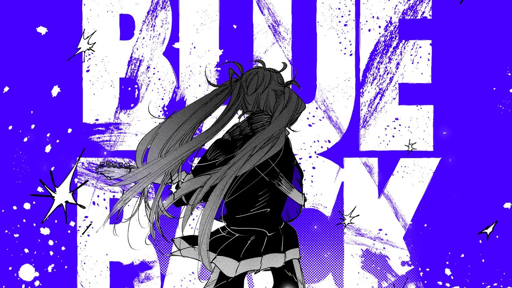

自己紹介 page1
自己紹介
↑この配色クソダサいwww
Q&A方式で答えて行くｿﾞ
名前は？
name:ワイ
○○○○
です。
○○っていう漢字が変換で出てこないので、▣▧▤❏って打って変換しています。
クラスは?
name:ワイ
2年1組31番だす。
1組率がめっちゃ高いです。小1,小2,小5,小6,中1,そして今年も1組なんだよな
ちなみに小3は4組、小4は3組。
性別は？
name:ソラッチ
どっからどう見ても...
趣味は？
name:ゆうき
アニメ・ボカロ・ゲームの3つ
どれが好きかは後々いうぜ。
特技は？
name:アンチマンガン
プログラミングとクソコラづくり
リア友(当時 10歳)
好きなゲームは？
name:腹部
プロセカとスマブラやね。
好きな曲は？
name:腹部
ボカロ全般好き
最近はビバハピ、SAN値直葬、初音ミクの暴走、BLUE BACKとかを聞いてる。
わかってると思うけどミクさん推しです。

好きなアニメは？
name:奈路谷めろん
「ハッピーシュガーライフ」、「がっこうぐらし!」、「魔法少女サイト」、「ロウきゅーぶ！」、「ステラのまほう」、「のんのんびより」、「らき☆すた」、「男女の友情は成立する? (いや、 しないっ!!)」とかかな。
ステラのまほうの主人公が入部する部活は
S(死んだ魚の目)N(日照不足)S(シャトルラン)部
好きなyoutuberは？
name:奈路谷めろん
最近は、プロセカ公式チャンネルとか、ハヤトの野望とか、2chまとめを見てるで。
2chまとめは「【2ch面白スレ解説】グッバイイッチ」を見てるで。
好きな漫画教えてクレメンス
name:肋骨折れた
金色のガッシュ！！
24年前の漫画。最近2が出て嬉い。あと肋骨ダイジョブそ？
好きな鉱石は？
name:匿名カバ
よくわからん
興味ない
きーぼーdddddddddddddddっdddddddddddっが壊れたんやがどうすればええ？
name:くそこら
「どうすれば」←はい此処使えてるwww
弱点は？
name:ミルクティー
漢字
いろいろめんどくさいから嫌だ
将来行ってみたい国は？
name:ソラッチ
日本から出なくていいや
家でゲームしたい
好きなポケモンは？
name:フィンランド好きの日本人
プリン
普通に元プリン使いだから
好きなゲームキャラは？
name:フィンランド好きの日本人
ミクさんはゲームじゃないとしたら、みのりちゃん推しですね。
ピックアップ全然来ないから石めっちゃ貯まる
今までﾄｯﾓといった場所で一番楽しい場所はどこ？
name:唐揚げ新潟定食300円
モノマネしてくれめんす
name:tabako
今パッと思いつくことでやりたいこと答えてって
name:タラのかばやき
2000万あったらなにする？
name:前田大然
うどんが食べたいです
将来の夢は？
name:奈路谷めろん
ITエンジニアか、ゲームプログラマー
まあ小1の頃からプログラミングを始めてたからね。
1年のときにここへ入部した理由は？
name:奈路谷めろん
運動部が嫌だったから。
吹部は運動部。
女子が入って正直どう思う？
name:奈路谷めろん
性別とか関係なくね？
どうせパソコン部は一人作業だからね。
3年生と1年生になにか一言
name:腹部
まあこんなオタクでも生きてるんで
緊急終了